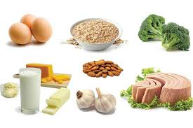
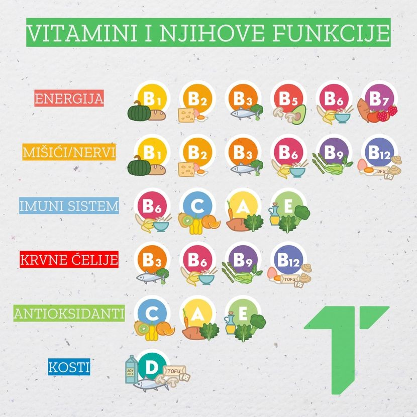
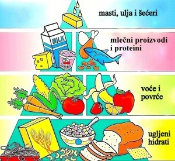
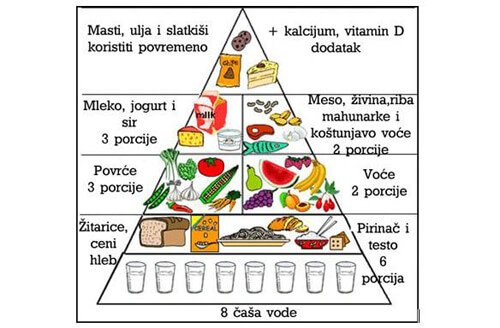

Ugljeni hidrati su glavni izvor energije u našem tijelu. Za dobijanje energije naše ćelije mogu da koriste samo glukozu, prosti ugljeni hidrati kojeg ima u voću, medu, povrću. U našoj ishrani su zastupljeni i složeni ugljeni hidrati npr. skrob, kojim su bogate žitarice, krompir, pirinač. Od viška glukoze nastaje složeni ugljeini hidrati glikogen, koji se, kao rezerva energije, čuva u jetri i mišićima.
Ugljeni hidrati ili šećeri čine svega 5% našeg tijela, ali i pored toga imaju veoma važnu ulogu. Oni su osnovni izvor energije u našem tijelu. Najjednostavniji ugljeni hidrati-monosaharidi sastoje se iz samo jednog molekula. Najčešći monosaharidi su glukoza i fruktoza, slatkog su ukusa i lako se rastvaraju u vodi.
Složeni šećeri-polisaharidi veliki su molekuli, građeni od nekoliko stotina međusobno povezanih prostih šećera. U našoj ishrani najzastupljeniji je skrob, polisaharid koji se sastoji od velikog broja molekula glukoze. Skrob, ali i drugi šećeri, ne mogu se apsorbovati u crijevima, već se razlažu do glukoze. To je jedini šećer koji može ući u ćeliju i obezbijediti joj energiju. Od glukoze, u jetri nastaje glikogen, složeni šećer sličan skrobu. On predstavlja rezervnu materiju za dobijanje energije; organizam koristi glikogen u slučaju veće fizičke aktivnosti ili intelektualnog rada.
Mnoge namirnice: sokovi, kolači, voćni jogurt, sladoled i dr. sadrže dosta ugljenih hidrata; jedna konzerva koka-kole sadrži više od 30 g šećera (oko 8 kašičica). Unošenje većih količina šećera prouzrokuje gojaznost i druge zdravstvene probleme.
Vlakna su po hemijskom sastavu ugljeni hidrati, a najvažnija materija ove grupe je celuloza. Celuloze ima samo u hrani biljnog porijekla. Ljudi ne mogu da vare vlakna, zato ona ne spadaju u hranljive materije. Ipak, one su važne jer pospješuju kretanje hrane kroz crijeva.
Bjelančevine su gradivne materije tijela, koje su sastavni djelovi mišića, kože, krvi, kostiju. Ulaze u sastav enzima i hormona, tako da učestvuju u regulaciji brojnih procesa u organizmu.
Hrana bogata proteinima.
Bjelančevina ima u hrani biljnog i životinjskog porijekla. U sistemu za varenje bjelančevine se razlažu na aminokiseline, koje krv prenosi do svih ćelija u tijelu. Od tih aminokiselina nastaju nove bjelančevine potrebne našem organizmu.
Masti ulaze u sastav ćelijskih membrana, značajni su sastojci nekih hormona, važan su izvor energije, imaju ulogu u održavanju elastičnosti kože. Masti se nalaze u mesu, mliječnim proizvodima i namirnicama boljnog porijekla, kao što su orasi, sjemenke suncokreta, masline.
Masti čine 10% naše tjelesne mase. Masti učestvuju u izgradnji ćelijskih membrana, značajni su sastojci nekih hormona, ulaze u sastav nerava, imaju ulogu u održavanju elastičnosti kože, važne su kao izvor energije... U organima za varenje razlažu se do sastavnih molekula: masnih kisjelina i glicerola. Masti sagorijevanjem oslobađaju dva puta veću količinu energije od ugljenih hidrata. Ako organizam ne iskoristi sve masti koje smo unijeli hranom, višak se skladišti kao masno tkivo ispod kože i drugim dijelovima tijela. Masno tkivo je toplotni izolator, ali i izvor energije za organizam u slučaju gladovanja i napornog rada. Masti unosimo sa namirnicama biljnog i životinjskog porijekla.
Vitamini su izuzetno važni za rast, zaštitu od bolesti, regulaciju metabolizma. Najviše vitamina ima u svježem voću i povrću.
Vitamini su materije koje naš organizam ne može da proizvodi, a važne su za mnoge metaboličke procese. Unosimo ih u organizam hranom, prije svega sa svježim voćem i povrćem. U sistemu za varenje se ne razlažu, već se apsorbuju u nepromijenjenom obliku. Vitamini su organizmu potrebni u malim količinama, ali su neophodni za rast, regulaciju metabolizma, krepkost, aktivnost i dobro zdravlje. Nedostatak vitamina izaziva premećaje-avitaminoza. Apsorpcija i dejstvo vitamina u organizmu uslovljeni su odeđenim mineralnim solima.
Minerali koji se nalaze u hrani imajuu važne uloge: kalcijum i fosfor ulaze u sastav kostiju i zuba, gvožđe u sastav krvnih ćelija i sl.
Značajni minerali u ljudskoj ishrani su: kalcijum, fosfor, magnezijum, jod, gvožđe... To su neorganske materije koje imaju gradivnu ulogu, što znači da ulaze u sastav ćelija. Kalcijum i fosfor ulaze u sastav kostiju i zuba, gvožđe u sastav crvenih krvnih zrnaca, jod je neophodan za sintezu hormona štitne žlijezde.
Pravilna ishrana je važan preduslov za dobro zdravlje i podrazumjeva unošenje raznovrsnih namirnica u pravilnom odnosu i količini. U prehrambenim navikama treba težitit uravnoteženoj ishrani.
Voda čini oko 70% ukupne tjelesne mase odrasle osobe. Ona je neophodna za funkcionisanje ljudskog organizma. Njena uloga u tijelu je nezamjenljiva:
osnovni je rastvarač
vrši transport hranljivih materija
uklanja iz organizma suvišne i štetne materije
učestvuje u regulisanju tjelesne temperature.
Voda se iz organizma gubi disanjem, znojenjem, mokraćom, stolicom. Ako organizam izgubi 10-20% od ukupne tjelesne tečnosti, nastupa smrt.
Naše zdravlje, raspoloženje, izgled, u velikoj mjeri zavise od načina ishrane. Pravilna, uravnotežena ishrana osnova je fizičkog i mentalnog zdravlja. Mnogi poremećaji i mnoge bolesti javljaju se kao posljedica nepravilne ishrane. Zato je veoma važno kakvu hranu jedemo, u kojoj količini, kako je pripremamo... U pravilnoj ishrani dominira hrana koja ne sadrži previše bjelančevina i masti, a bogata je prirodnim ugljenim hidratima, vitaminima, mineralima i vlaknima. Pravilna ishrana podrazumijeva unošenje pravilno kombinovanih namirnica, u umjerenim količinama. Takođe je važno da ne jedemo previše brzo, da hrana nije veoma slana ili previše začinjena. Uravnotežena ishrana zadovoljava potrebe organizma, bez suvišnih hranljivih sastojaka i obezbjeđuje energiju i materije za pravilan rast i razvoj.
Piramida ishrane-pravilan odnos pet osnovnih grupa namirnica i njihova dnevna upotreba.
Energetska vrijednost hrane izražava se u džulima (J), mada se veoma često koristi i kalorija (1cal=4,18J). Ako bismo ostali u krevetu 24 časa, potrošili bismo 1560 kalorija za održavanje osnovnih životnih procesa. To je količina energije koju svakodnevno moramo unijeti u organizam. Za dodatne aktivnosti moramo unijeti veći broj kalorija. Koliki je taj broj zavisi od tjelesne težine (što smo teži, imamo veću potrebu za hranom), pola (ženama je potrebno 10% manje energije nego muškarcima), od vrste aktivnosti kojom se bavimo.